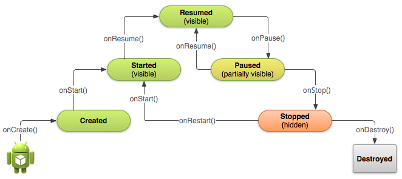
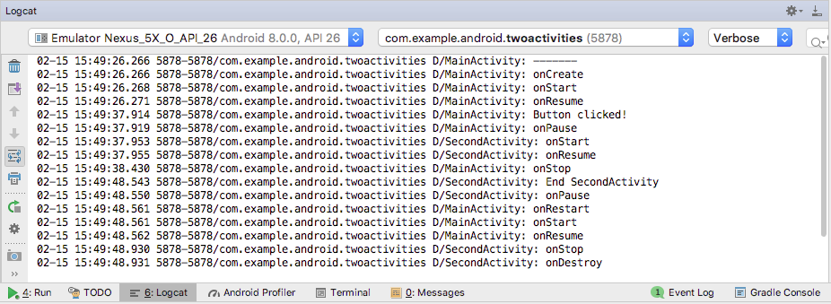

この実践的なコードラボはユニット 1:Android Developer Fundamentals (Version 2) コースの一部です。このコースでは、コードラボを順番に学習することで、このコースを最大限に活用することができます。
- このコースのコードラボの完全なリストについては、Codelabs for Android Developer Fundamentals (V2)を参照してください。
- すべてのコンセプトチャプター、アプリ、スライドへのリンクを含むコースの詳細については、Android DeveloperFundamentals (Version 2)を参照してください。
注：このコースでは、「Codelab」と「実践」という用語を入れ替えて使用しています。
序章
この実習では、アクティビティのライフサイクルについて学びます。ライフサイクルとは、アクティビティが作成されてから破棄され、システムがリソースを回収するまでの全ライフサイクルの間、アクティビティの状態のセットのことです。ユーザーがアプリ内のアクティビティ間を移動すると（アプリへの出入りだけでなく）、アクティビティはライフサイクルの異なる状態の間で遷移します。

アクティビティのライフサイクルの各ステージには、対応するコールバック メソッドがあります：onCreate()、 onStart()、onPause()など。アクティビティの状態が変化すると、関連するコールバックメソッドが呼び出されます。これらのメソッドのうちの 1 つであるonCreate() はすでに見たことがあります。アクティビティ・クラスのライフサイクル・コールバック・メソッドをオーバーライドすることで、ユーザーやシステムのアクションに応じて、アクティビティのデフォルトの動作を変更することができます。
アクティビティの状態は、ユーザーがデバイスを縦から横に回転させたときなど、デバイスの設定変更に応じて変更することもできます。このような構成変更が発生すると、アクティビティは破棄されてデフォルト状態で再作成され、ユーザーはアクティビティに入力した情報を失う可能性があります。ユーザーを混乱させないためには、予期せぬデータの損失を防ぐためにアプリを開発することが重要です。この実習の後半では、構成の変更を実験し、デバイス構成の変更やその他のアクティビティのライフサイクルイベントに対応してアクティビティの状態を保持する方法を学びます。
この実習では、TwoActivitiesアプリにロギング文を追加し、アプリを使用しながらアクティビティのライフサイクルの変化を観察します。その後、これらの変更に対応して作業を開始し、このような状況下でユーザー入力を処理する方法を探ります。
すでに知っておくべきこと
できるようになるはずです。
- Android Studioでアプリプロジェクトを作成して実行する。
- アプリにログステートメントを追加し、Logcatペインでそれらのログを表示する。
アクティビティとインテントを理解して作業し、それらを快適に操作できる。
What you'll learn
- アクティビティ
のライフサイクルの仕組み。 - アクティビティ
が開始、一時停止、停止、破棄されるとき。 - アクティビティ
の変更に関連するライフサイクルコールバックメソッドについて。 - アクティビティ
のライフサイクル イベントをもたらすアクション（構成の変更など）の効果。 - ライフサイクル イベントをまたいで
Activity の状態を保持する方法。
What you'll do
- ロギング ステートメントを含む様々な
Activityライフサイクル コールバックを実装するために、前回の実践から TwoActivities アプリにコードを追加します。 - アプリが実行され、アプリ内の各
アクティビティと対話する際の状態の変化を観察します。 - ユーザーの行動やデバイス上の設定変更に応じて予期せず再作成された
アクティビティのインスタンス状態を保持するようにアプリを修正します。
この実習では、TwoActivitiesアプリを追加します。このアプリの見た目や動作は、前回のコードラボで行ったものとほぼ同じです。このアプリには2つのActivityの実装が含まれており、ユーザーはそれらの間で送信する機能を提供します。この実習でアプリに変更を加えても、目に見えるユーザーの動作には影響しません。
このタスクでは、これらのメソッドが呼び出されたときにlogcatにメッセージを出力するために、Activityのライフサイクルコールバックメソッドをすべて実装します。これらのログ メッセージにより、アクティビティのライフサイクルがいつ状態を変更したか、また、ライフサイクルの状態の変更が実行中のアプリにどのように影響するかを確認することができます。
1.1 (オプション) TwoActivities プロジェクトをコピーします。
この実習では、前回の実習で作成した既存のTwoActivitiesプロジェクトを修正します。前回の TwoActivities プロジェクトをそのまま残したい場合は、付録の手順に従ってください。ユーティリティ」の手順に従って、プロジェクトのコピーを作成してください。
1.2 MainActivityにコールバックを実装する
- Android StudioでTwoActivitiesプロジェクトを開き、Project > AndroidペインでMainActivityを開きます。
onCreate()メソッドで、以下のログ ステートメントを追加します。
Log.d(LOG_TAG, "-------");
Log.d(LOG_TAG, "onCreate");onStart()コールバックのオーバーライドを追加します。
@Override
public void onStart(){
super.onStart();
Log.d(LOG_TAG, "onStart");
}ショートカットは、Android Studio の「コード」>「メソッドを上書き」を選択します。クラスでオーバーライドできるメソッドがすべて表示されます。リストから 1 つ以上のコールバック・メソッドを選択すると、スーパークラスへの必要な呼び出しを含む、それらのメソッドの完全なテンプレートが挿入されます。
onStart()メソッドをテンプレートとして使用して、onPause()、onRestart()、onResume()、onStop()、およびonDestroy()ライフサイクル・コールバックを実装します。
コールバックメソッドはすべて同じシグネチャを持っています (名前を除いて)。これらの他のコールバックメソッドを作成するためにonStart() を コピー＆ペースト した場合、スーパークラスで正しいメソッドを呼び出すように内容を更新し、正しいメソッドをログに記録することを忘れないようにしてください。
- アプリを実行します。
- Android Studioの下部にあるLogcatタブをクリックして、Logcatペインを表示します。
アクティビティの開始時に遷移した 3 つのライフサイクル状態を示す 3 つのログ メッセージが表示されます。
D/MainActivity: -------
D/MainActivity: onCreate
D/MainActivity: onStart
D/MainActivity: onResume1.3 SecondActivityにライフサイクルコールバックを実装する
MainActivityにライフサイクルコールバックメソッドを実装したので、SecondActivityにも同じことをしてください。
- SecondActivity を開きます。
- クラスの先頭に、
LOG_TAG変数の定数を追加します。
private static final String LOG_TAG = SecondActivity.class.getSimpleName();- ライフサイクルコールバックとログ文を2つ目の
Activityに追加します。(MainActivityからコールバックメソッドをコピー＆ペーストすることができます) returnReply()メソッドに、finish()メソッドの直前にログ文を追加します。
Log.d(LOG_TAG, "End SecondActivity");1**.4 アプリの実行時にログを監視する***。
- アプリを実行します。
- Android Studioの下部にあるLogcatタブをクリックして、Logcatペインを表示します。
- 検索ボックスに「アクティビティ」と入力します。Androidのログキャットは非常に長くてごちゃごちゃしていることがあります。各クラスの
LOG_TAG変数にはMainActivityまたはSecondActivity のいずれかの単語が含まれているため、このキーワードを使用すると、興味のあるものだけをログにフィルタリングすることができます。

アプリを使用して実験し、異なるアクションに反応して発生するライフサイクル イベントに注目してください。特に、以下のことを試してみてください。
- アプリを普通に使用する（メッセージを送信する、別のメッセージで返信する）。
- 戻るボタンを使用して、2つ目の
アクティビティからメインのアクティビティに戻る。 - アプリバーの上矢印を使用して、2つ目の
アクティビティからメインアクティビティに戻ります。 - アプリ内の異なる時間に
メインアクティビティと2つ目のアクティビティの両方でデバイスを回転させ、ログと画面上で何が起こるかを観察します。 - 概要ボタン（ホームの右にある四角いボタン）を押して、アプリを閉じます（×をタップ）。
- ホーム画面に戻り、アプリを再起動します。
ヒント：エミュレータでアプリを実行している場合は、Control+F11またはControl+Function+F11で回転をシミュレートできます。
タスク1のソリューションコード
以下のコードスニペットは、最初のタスクのソリューションコードを示しています。
メインアクティビティ
以下のコードスニペットは、MainActivity に追加されたコードを示していますが、クラス全体ではありません。
onCreate()メソッド。
@Override
protected void onCreate(Bundle savedInstanceState) {
super.onCreate(savedInstanceState);
setContentView(R.layout.activity_main);
// Log the start of the onCreate() method.
Log.d(LOG_TAG, "-------");
Log.d(LOG_TAG, "onCreate");
// Initialize all the view variables.
mMessageEditText = findViewById(R.id.editText_main);
mReplyHeadTextView = findViewById(R.id.text_header_reply);
mReplyTextView = findViewById(R.id.text_message_reply);
}他のライフサイクルメソッド
@Override
protected void onStart() {
super.onStart();
Log.d(LOG_TAG, "onStart");
}
@Override
protected void onPause() {
super.onPause();
Log.d(LOG_TAG, "onPause");
}
@Override
protected void onRestart() {
super.onRestart();
Log.d(LOG_TAG, "onRestart");
}
@Override
protected void onResume() {
super.onResume();
Log.d(LOG_TAG, "onResume");
}
@Override
protected void onStop() {
super.onStop();
Log.d(LOG_TAG, "onStop");
}
@Override
protected void onDestroy() {
super.onDestroy();
Log.d(LOG_TAG, "onDestroy");
}セカンドアクティビティ
以下のコードスニペットは、SecondActivity に追加されたコードを示していますが、クラス全体ではありません。
private static final String LOG_TAG = SecondActivity.class.getSimpleName();SecondActivityクラスの先頭にある
public void returnReply(View view) {
String reply = mReply.getText().toString();
Intent replyIntent = new Intent();
replyIntent.putExtra(EXTRA_REPLY, reply);
setResult(RESULT_OK, replyIntent);
Log.d(LOG_TAG, "End SecondActivity");
finish();
}他のライフサイクルメソッド。
上記のMainActivityの場合と同じです。
システム リソースやユーザーの動作によっては、アプリ内の各アクティビティが破壊されたり再構築されたりする頻度が、思ったよりもはるかに高くなることがあります。
最後のセクションで、デバイスやエミュレータを回転させたときにこの動作に気づいたことがあるかもしれません。デバイスの回転は、デバイスの設定変更の一例です。回転は最も一般的なものですが、すべての設定変更は、現在のアクティビティが破棄され、あたかも新しいものであるかのように再作成される結果となります。コードでこの動作を考慮していないと、設定変更が発生したときにアクティビティのレイアウトがデフォルトの外観と初期値に戻ってしまい、ユーザーの場所、データ、またはアプリの進行状況が失われる可能性があります。
各アクティビティの状態は、キー/値のペアのセットとして バンドルオブジェクトを使用しています。システムは、アクティビティが停止する直前にデフォルトの状態情報をインスタンス状態のバンドルに保存し、そのバンドルを新しいアクティビティインスタンスに渡して復元します。
アクティビティが予期せず破壊されたり再作成されたりしたときにデータが失われないようにするには、onSaveInstanceState()メソッドを実装する必要があります。システムは、アクティビティが破壊されて再作成される可能性があるときに、アクティビティ上でこのメソッドを呼び出します (onPause()とonStop() の間)。
インスタンス状態で保存されるデータは、現在のアプリ セッション中の特定のアクティビティのこのインスタンスのみに固有のものです。新しいアプリ セッションを停止して再起動すると、アクティビティのインスタンス状態は失われ、アクティビティはデフォルトの外観に戻ります。アプリ セッション間でユーザー データを保存する必要がある場合は、共有環境設定またはデータベースを使用します。これらの両方については、後の実践で学びます。
2.1 onSaveInstanceState()でアクティビティのインスタンス状態を保存する
デバイスを回転させても、2つ目のアクティビティの状態には全く影響しないことにお気づきかもしれません。これは、2 番目のアクティビティのレイアウトと状態が、それをアクティブにしたレイアウトとIntentから生成されるからです。アクティビティが再作成されても、インテントは存在しており、そのインテント内のデータは、第2のアクティビティのonCreate()メソッドが呼ばれるたびに使用されます。
さらに、各アクティビティでは、メッセージや返信用のEditText要素に入力したテキストは、デバイスを回転させても保持されていることに気づくかもしれません。これは、レイアウト内の一部のView要素の状態情報が設定変更をまたいで自動的に保存されるためで、EditTextの現在の値はそのようなケースの一つです。
ですから、あなたが興味を持っているActivityの状態は、メインActivityの返信ヘッダーと返信テキストのTextView要素だけです。両方のTextView要素はデフォルトでは見えません。
このタスクでは、onSaveInstanceState()を使って2つのTextView要素のインスタンス状態を保持するコードを追加します。
- MainActivityを開きます。
onSaveInstanceState()のスケルトン実装をアクティビティに追加するか、Code > Override Methodsを使用してスケルトンオーバーライドを挿入します。
@Override
public void onSaveInstanceState(Bundle outState) {
super.onSaveInstanceState(outState);
}- ヘッダが現在表示されているかどうかをチェックし、表示されている場合は、その表示状態を
putBoolean()メソッドとキー"reply_visible" を使って stateBundleに入れます。
if (mReplyHeadTextView.getVisibility() == View.VISIBLE) {
outState.putBoolean("reply_visible", true);
}2つ目のアクティビティからの返信があるまでは、返信ヘッダーとテキストは見えないようになっていることを覚えておいてください。もしヘッダが表示されていれば、保存する必要のある返信データがあります。ヘッダーの実際のテキストは変更されないため、保存する必要はありません。
- 同じチェックの中で、返信テキストを
バンドルに追加します。
outState.putString("reply_text",mReplyTextView.getText().toString());ヘッダが表示されている場合は、返信メッセージ自体も表示されていると考えることができます。返信メッセージの現在の表示状態をテストしたり保存したりする必要はありません。メッセージの実際のテキストだけが、キー"reply_text"を持つ状態バンドルに入ります。
アクティビティの作成後に変更される可能性のあるビュー要素のみの状態が保存されます。アプリ内の他のView要素（EditText、Button）は、いつでもデフォルトのレイアウトから再作成することができます。
エディットテキストの内容など、一部のビュー要素の状態はシステムによって保存されますのでご注意ください。
2.2 onCreate()でアクティビティのインスタンス状態を復元する
アクティビティのインスタンス状態を保存したら、アクティビティを再作成する際にそれを復元する必要があります。これはonCreate() で行うか、アクティビティが作成された後にonStart() の後に呼び出されるonRestoreInstanceState()コールバックを実装することで行うことができます。
ほとんどの場合、アクティビティの状態を復元するのに適した場所はonCreate() の中で、状態を含む UI をできるだけ早く利用できるようにします。すべての初期化が完了した後にonRestoreInstanceState()で行うと便利な場合もありますし、サブクラスがデフォルトの実装を使用するかどうかを決定できるようにする場合もあります。
onCreate()メソッドで、findViewById()でビュー変数を初期化した後、savedInstanceState がnull でないことを確認するテストを追加します。
// Initialize all the view variables.
mMessageEditText = findViewById(R.id.editText_main);
mReplyHeadTextView = findViewById(R.id.text_header_reply);
mReplyTextView = findViewById(R.id.text_message_reply);
// Restore the state.
if (savedInstanceState != null) {
}アクティビティが作成されると、システムは状態のバンドルを唯一の引数としてonCreate()に渡します。最初に onCreate()が呼び出されてアプリが起動すると、Bundle は nullになります。以後のonCreate() の呼び出しでは、onSaveInstanceState() で保存したデータを含むバンドルが生成されます。
- このチェックの中で、
"reply_visible"というキーでBundleから現在の可視性(trueかfalse)を取得します。
if (savedInstanceState != null) {
boolean isVisible =
savedInstanceState.getBoolean("reply_visible");
}- 前の行の下に、isVisible変数のテストを追加します。
if (isVisible) {
}状態のバンドルにreply_visibleキーがある場合（したがってisVisibleがtrue）、状態を復元する必要があります。
isVisibleテストの中で、ヘッダを可視化します。
mReplyHeadTextView.setVisibility(View.VISIBLE);reply_text"キーを持つバンドルから返信用テキストメッセージを取得し、その文字列を表示するように返信用テキストビューを設定します。
mReplyTextView.セットテキスト(セーブインスタンス状態.取得文字列("返信文));
mReplyTextView.setText(savedInstanceState.getString("reply_text"));- 返信
テキストビューも表示するようにします。
mReplyTextView.セット可視性(ビュー.目に見える);
mReplyTextView.setVisibility(View.VISIBLE);- アプリを実行してください。デバイスまたはエミュレータを回転させて、
アクティビティが再作成された後も返信メッセージが画面上に残るようにしてみてください。
タスク2のソリューションコード
以下のコードスニペットは、このタスクのソリューションコードを示しています。
メインアクティビティ
以下のコードスニペットは、MainActivityに追加されたコードを示していますが、クラス全体ではありません。
onSaveInstanceState()メソッド。
@Override
public void onSaveInstanceState(Bundle outState) {
super.onSaveInstanceState(outState);
// If the heading is visible, message needs to be saved.
// Otherwise we're still using default layout.
if (mReplyHeadTextView.getVisibility() == View.VISIBLE) {
outState.putBoolean("reply_visible", true);
outState.putString("reply_text",
mReplyTextView.getText().toString());
}
}onCreate()メソッド。
@Override
protected void onCreate(Bundle savedInstanceState) {
super.onCreate(savedInstanceState);
setContentView(R.layout.activity_main);
Log.d(LOG_TAG, "-------");
Log.d(LOG_TAG, "onCreate");
// Initialize all the view variables.
mMessageEditText = findViewById(R.id.editText_main);
mReplyHeadTextView = findViewById(R.id.text_header_reply);
mReplyTextView = findViewById(R.id.text_message_reply);
// Restore the saved state.
// See onSaveInstanceState() for what gets saved.
if (savedInstanceState != null) {
boolean isVisible =
savedInstanceState.getBoolean("reply_visible");
// Show both the header and the message views. If isVisible is
// false or missing from the bundle, use the default layout.
if (isVisible) {
mReplyHeadTextView.setVisibility(View.VISIBLE);
mReplyTextView.setText(savedInstanceState
.getString("reply_text"));
mReplyTextView.setVisibility(View.VISIBLE);
}
}
}完成したプロジェクトです。
Android Studioプロジェクト。 TwoActivitiesLifecycle
注意:コーディングの課題はすべて任意であり、後のレッスンの前提条件ではありません。
課題。ユーザーが構築するリストのためのメインアクティビティと、一般的な買い物アイテムのリストのための2番目のアクティビティを持つシンプルな買い物リストアプリを作成します。
- メインアクティビティには、構築するリストが含まれており、10個の空の
TextView要素で構成されている必要があります。 - メインアクティビティのアイテム追加ボタンは、一般的なショッピングアイテム（チーズ、米、リンゴなど）のリストを含む2つ目のアクティビティを起動します。アイテムを表示するには
Button要素を使用します。 - アイテムを選択するとメインアクティビティに戻り、選択したアイテムを含む空の
TextViewを更新します。
あるアクティビティから別のアクティビティに情報を渡すためにIntentを使用します。ユーザーがデバイスを回転させたときに、ショッピングリストの現在の状態が保存されるようにしてください。
- アクティビティのライフサイクルは、
アクティビティが最初に作成されたときに始まり、Android システムがそのアクティビティのリソースを回収したときに終了する、アクティビティが移行する状態のセットです。 - ユーザーが 1 つの
アクティビティから別のアクティビティに移動したり、アプリの内部と外部を移動したりすると、各アクティビティはアクティビティライフサイクルの状態の間を移動します。 アクティビティライフサイクルの各ステートには、対応するコールバック メソッドがあり、アクティビティクラスでオーバーライドできます。- ライフサイクル・メソッドは、
onCreate()、onStart()、onPause()、onRestart()、onResume()、onStop()、onDestroy()です。 - ライフサイクル コールバック メソッドをオーバーライドすることで、
アクティビティがその状態に遷移したときに発生する動作を追加することができます。 - Android Studio のCode > Override で、スケルトン・オーバーライド・メソッドをクラスに追加できます。
- 回転などのデバイス設定の変更により、
アクティビティは破棄され、あたかも新しいものであるかのように再作成されます。 - アクティビティ
の状態の一部は、EditText要素の現在の値を含めて、設定変更時に保存されます。他のすべてのデータについては、明示的に自分で保存する必要があります。 - アクティビティ
のインスタンス状態は、onSaveInstanceState()メソッドで保存します。 - インスタンス状態のデータは、単純なキー/値のペアとして
Bundleに保存されます。データをBundleに入れたり、Bundleからデータを取り出したりするにはBundleメソッドを使用します。 - インスタンス状態の復元は、好ましい方法である
onCreate()で行うか、onRestoreInstanceState()で行います。
関連する概念のドキュメントは2.2.にあります。アクティビティのライフサイクルと状態を参照してください。
Android Studio のドキュメント。
Androidの開発者向けドキュメント。
このセクションでは、インストラクターが主導するコースの一部として、このコードラボを通して作業する学生のための可能な宿題をリストアップします。以下のことを行うのはインストラクター次第です。
- 必要に応じて宿題を割り当てる。
- 宿題の提出方法を学生に伝える。
- 宿題の割り当てを評価します。
インストラクターは、これらの提案を少しでも多くのように使用することができますし、彼らが適切であると感じる他の宿題を割り当てるために自由に感じる必要があります。
あなた自身でこのコードラボを介して作業している場合は、あなたの知識をテストするためにこれらの宿題の割り当てを使用して自由に感じています。
アプリをビルドして実行する
- カウンターの
TextView、カウンターをインクリメントするButton、EditTextを保持するレイアウトでアプリを作成します。下のスクリーンショットを例として参照してください。 レイアウトを正確に複製する必要はありません。 - カウンターをインクリメントする
Buttonにクリックハンドラを追加します。 - アプリを実行し、カウンターをインクリメントします。
EditTextにテキストを入力します。 - デバイスを回転させます。カウンターはリセットされますが、
EditTextはリセットされないことに注意してください。 onSaveInstanceState()を実装して、アプリの現在の状態を保存します。onCreate()を更新してアプリの状態を復元します。- デバイスを回転させたときにアプリの状態が保存されるようにしてください。

これらの質問に答えてください。
質問1
onSaveInstanceState()を実装する前に宿題アプリを実行すると、デバイスを回転させるとどうなりますか？1つ選択してください。
EditTextには入力したテキストは含まれなくなりますが、カウンターは保存されます。- カウンタは 0 にリセットされ、
編集テキストには入力したテキストは含まれなくなります。 - カウンタは 0 にリセットされますが、
編集テキストの内容は保存されます。 - カウンタと
編集テキストの内容は保存されます。
質問2
デバイスの設定変更(回転など)が発生したときに呼び出されるアクティビティのライフサイクルメソッドは何ですか? 1つ選んでください。
- Android は
onStop() を呼び出すことで、すぐにActivity をシャットダウンします。コードはアクティビティを再起動する必要があります。 - Android は
onPause()、onStop()、onDestroy()を呼び出してアクティビティをシャットダウンします。Activityを再起動する必要があります。 - Android は
onPause()、onStop()、onDestroy() を呼び出してアクティビティをシャットダウンした後、onCreate()、onStart()、onResume()を呼び出してアクティビティを再起動します。 - Androidはすぐに
onResume()を呼び出します。
質問3
アクティビティのライフサイクルの中で、onSaveInstanceState()が呼び出されるのはいつですか？1つ選んでください。
- onSaveInstanceState()
はonStop()メソッドの前に呼び出されます。 onSaveInstanceState() はonResume() メソッドの前に呼び出されます。- onSaveInstanceState()
はonCreate() メソッドの前に呼び出されます。 - onSaveInstanceState()
は、onDestroy()メソッドの前に呼び出されます。
質問4
アクティビティが終了または破棄される前にデータを保存するために使用するアクティビティのライフサイクルの方法はどれが最適ですか？1つ選んでください。
onPause()またはonStop()onResume()またはonCreate()onDestroy()onStart()またはonRestart()
アプリを提出して採点を受ける
学年別ガイダンス
アプリが以下の機能を持っていることを確認してください。
- カウンター、そのカウンターをインクリメントする
ボタン、編集テキストが表示されます。 - ボタン
をクリックすると、カウンターが1インクリメントされます。 - デバイスを回転させると、カウンターと
エディットテキストの両方の状態が保持されます。 MainActivity.javaの実装では、カウンタの値を保存するためにonSaveInstanceState()メソッドを使用しています。onCreate()の実装は、outStateバンドルの存在をテストします。 そのバンドルが存在する場合、カウンタの値は復元され、テキストビューに保存されます。
Android Developer Fundamentals (V2)コースの次の実践的なコードラボを探すには、Codelabs for Anroid Developer Fundamentals (V2)を参照してください。
概念章、アプリ、スライドへのリンクを含むコースの概要については、Android DeveloperFundamentals (Version 2)を参照してください。